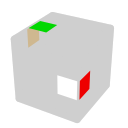
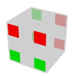
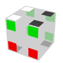
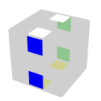

FMC
ルービックキューブ関連 > FMC
ルービックキューブのFMC（Fewest Move Challenge、最少手数競技）とは、通常の競技のように揃える時間を競うのではなく、短い手数で揃えることを競う競技である。 FMCで使う解法をまとめる。 このページの解法で30手を切ることは目指せる。
もちろん他の解法もある。 2023年現在、この解法が主流のように思えるが、上位に他の解法の人もいる。 また、細かいところでも他のテクニックが色々とありそう。
全体の流れ
次の順番で進める。
- EO
- DR
- HTR
- （FR）
- スケルトン作成
- インサート
- スライスインサート
各ステップでは、軸が違うものを試して手数が短くなるものを選択したり、NISSで逆方向から手順を探したりする。 色々試してDRが完了した状態を何個も見つけ、その中で良いものを1個選択して、多少NISSを使ったりしつつ完成に向かうという流れが良いのではないかと思う。
EO
⇒
Scramble: R' U' F U' L2 B R2 F2 U L B2 U' F2 U B2 L2 F2 L2 U2 F2 U L' U2 R' U' F
Solution: L B L' U R2 F
以降、各ステップで揃える例を載せていく。
EO（Edge Orientation）はエッジの向きを揃えるステップである。
エッジの向きは、U/DステッカーがU/D面にあるときを正しい向きとする。 U/Dステッカーが無いエッジは、U/Dステッカーの代わりにF/Bステッカーを見る。 エッジがE層にあるときは、U/D面の代わりにF/B面にステッカーがあるときを正しい向きとする。 これは「F/B軸」に対する定義で、他にL/R軸とU/D軸も考えられる。 U/Dのステッカーと面をまず見ているのに「F/B軸」と言っているのは、この定義の「U/D」を「L/R」に置き換えてもエッジが正しい向きかどうかが変化せず、「F/B」を「L/R」に置き換えると変化しうるからである。
EOが完了した（全てのエッジの向きが正しくなった）かどうかと、<U, D, L, R, F2, B2> の動きだけで（FとBの90度回転を使わないで）キューブを揃えられるかどうかは同値である。
解法
F/B軸の場合の解法。 他の軸の場合は適宜面や動きを置き換える。 同様に、他のステップも特定の軸の場合の解法を書く。
F か F' でF面にある4個のエッジの向きが合っているかどうかが反転する。 合っていない4個のエッジをF面に集めて、F か F' でそれらのエッジの向きが合う。 F面の代わりにB面でも良い。
向きの合っていないエッジの個数は必ず偶数である。 向きの合っていないエッジの個数が4の倍数でないときは、3個の向きの合っていないエッジをF面に集めて F によって向きの合っていないエッジを1個にしたり、1個のエッジをF面に置いて3個にしたりする。 エッジの個数は12個なので、スクランブル状態で向きの合っていないエッジは6個になる確率が高い。 F面かB面に3個のエッジを集めて向きの合っていないエッジを4個にし、もう一方の面に4個を集めて全てのエッジの向きを合わせることが多い。
DR
⇒
Scramble: R' U' F U' L2 B R2 F2 U L B2 U' F2 U B2 L2 F2 L2 U2 F2 U L' U2 R' U' F
Solution: L B L' U R2 F D2 R' U' D R D R
（U/D軸の）DR（Domino Reduction）とは、EOに加え、U/D面にU/Dステッカーだけが見えている状態にすることである。 この状態のキューブは、<U, D, L2, R2, F2, B2> の動きだけでキューブを揃えることができる。
DRは次の2個のステップに分かれる。
DR ?e?c
EOでエッジの向きは揃えているので、DRの条件を満たすためには、U/DステッカーのあるエッジをU/D面に、それ以外のエッジのE層に置くことになる。 この位置が合っていないエッジの個数を2eなどのように表す。 コーナーの向きを、U/DステッカーがU/D面を向いているときに合っていると定めたとき、向きの合っていないコーナーの個数を3cなどのように表す。
なお、エッジについては、U/D面にあるE層エッジの個数で表しているものもある。 この場合は、eの値が半分になる。 DRトリガーの一覧を見るときなどには注意が必要。 また、「DR ?e?c」について、「DRまで残り何個」という意味で、マイナスを使って「DR-?e?c」と書いている人も多い。
このステップでは、DR 2e4cかDR 2e3cの状態を目指す。 DR 4e4cでも良いが、次のDRトリガーのステップで手数が掛かるので、DRトリガーに容易に持ち込める場合だけにするのが良いと思う。 DR 2e0cやDR 4e0cでも良い。 しかし、このステップで手数が掛かってしまう場合が多いと思う。
L か L'（R か R'）でL面（R面）にあるキューブの状態が変わるので、EOの場合と同様に、L面（R面）に合っていないキューブを持っていって状態を変えれば良い。
DRトリガー
DRトリガーとは、DRが完了した状態にするときに最後に使う手順である。 <U, D, L2, R2, F2, B2> の動きでは、合っていないピースの個数は変化しない。 これらの動きでDRトリガーが使える位置にピースを持っていって、DRトリガーを使う。
DRトリガー。 次のページから良く使うものを転載した。 最後の動きは逆でも良いので、次のHTRの手数が短くなるほうを選ぶ。
| ?e?c | Image | Algorithm | Memo |
|---|---|---|---|
| 2e4c | R U2 R' | ||
| 2e3c | R U R' | 2e3cは2種類あるので手数が短くなるほうを選ぶ。 | |
| 2e3c | R U' R' | ||
| 4e4c | R | ||
| 2e0c |  | L U2 B2 D2 R | 位置の合っていないエッジを同じ面に持ってきて、その面以外を順に180度回転。 |
| 4e0c | L U2 D2 R |
HTR
⇒
Scramble: R' U' F U' L2 B R2 F2 U L B2 U' F2 U B2 L2 F2 L2 U2 F2 U L' U2 R' U' F
Solution: L B L' U R2 F D2 R' U' D R D R B2 U' R2 U L2 F2 B2 D'
HTR（Half Turn Reduction）とは、キューブを180度回転（<U2, D2, L2, R2, F2, B2>）だけで揃えられる状態にすることである。 EOやDRと異なり、特定の軸というものはない。
HTRが完了しているかどうかは、次の条件を全て満たしているかどうかと同値である。
- U/D面、F/B面、L/R面にはそれぞれの色のステッカーのみがある。
- これは必要条件であって、十分条件ではないことに注意。
- U/D面（他の面でも良い）が180度回転だけで揃えられる状態になっている。
- 2個のコーナーの2点交換でコーナーを揃えるとき、交換回数が偶数になる。
- 180度回転では、コーナーは2組の交換が同時に起こるため。
- 目隠しルービックキューブの分析 のようにコーナーの本来あるべき位置を辿っていった（この辿り方を「BLDトレース」と呼ぶことにする）とき、サイズが偶数のループの個数が偶数であることと同値であり、これで調べる。
HTRが一番難しい。 以降では、QT、コーナーの揃え方、エッジの揃え方の順に説明する。
QT
QT（Quarter Turns）とは、HTR完了までに必要な90度回転の最少回数である。 （U/D軸の）DRが完了した時点で側面の90度回転は使わないので、90度回転は <U, D> である。 HTRが完了したら180度回転だけでキューブを揃えられるため、キューブを揃えるまでに必要な90度回転と言い換えても良い。 QTの偶奇と、2点交換でコーナーを揃えるときの交換回数の偶奇は一致する。
QTは、HTRでコーナーを揃えるときの指針になるとともに、HTRに掛かる手数の目安になる。 DRが完了した段階でQTを調べて、例えば、多少手数が短くてもQTが多かったら、そのDRは諦めて他のDRを探すということができる。
この節の内容は次の文章を元にしている。 筆者は、QTの偶奇（パリティ）に加えてU/D面の状態の考慮も必要なことを指して、hyper-parityと言っている。
U/D面
DRが完了しているので、U/D面にはU/Dステッカーだけがある。 180度回転で一致するものを同一視すると、U/D面の状態は次の4個の状態に分けられる。
見づらいので黄色を黒にしている。 D面の何も無いように見えるところは、実際は白色。 画像は例で、全ての状態を列挙しているわけではない。
| Name | Images | Memo |
|---|---|---|
| Solved | 完成状態。 本当に完成していなくても、180度回転で揃う状態であれば良い。 | |
| Bars | （180度回転によって）上下にバーができる状態。 上下のバーが90度ずれている。 180度ずれているとSolvedになる。 | |
| Slashes | 上下にずれたスラッシュができている。 スラッシュの向きが揃っていると、Solved。 | |
| Bar/Slash | バーとスラッシュができている。 上に1個で下に3個のときがBarsと良く似ているので注意。 3個の色が集まっている角、もしくはその対角の位置の反対側に同じ色の1個があるのが、Bar/Slash。 |
1回の90度回転で可能な遷移を線で結ぶと下の図になる。
F/B面
F/B面に対してL/R面は一意に定まるので、L/R面を見る必要は無い。 F/D面の状態は次の4通りに分けられる。 FとB、LとRは同一視する。 合っていないコーナーの個数が6個と8個のときは、それぞれ2個と0個の場合と同様に進め、途中でU面の代わりにD面を回すなどすれば良い。
| Name | Images | Memo |
|---|---|---|
| Solved | 完成状態。 | |
| One Face | 合っていない4個のコーナーを180度回転でU面に集めることが可能な状態。 ここからは1回の90度回転で揃う。 | |
| Bars |  | 上下に90度ずれたバーを作れる状態。180度ずれているとOne barになる。 |
| One Bar | バーを1個だけ作れる状態。合っていないコーナーが2個。 |
1回の90度回転で可能な遷移を線で結ぶと下の図になる。 U/D面と似ているが、Solvedの位置が異なることに注意。
Hyper-Parity Maze
U/D面とF/B面の状態には存在しない組み合わせもあるし、遷移に制限が掛かる。 U/D面とF/B面の状態の組み合わせに対し、可能な遷移を図示したのが次の「Hyper-Parity Maze」である。 この迷路上で、90度回転の回数の偶奇が合うようにSolved + Solvedに遷移するときの最少移動回数がQTである。
基本的には、偶奇が異なってもQTが±1のルートがある。 ただし、Solve + Solved（偶数: 0、奇数: 3）、Bars + One Face（偶数: 4、奇数: 1）、Bar/Slash + Bars（偶数: 2、奇数: 5）は±3変わる。
U/D面とF/B面の状態が同じでも、Hyper-Parity Maze上の状態は異なることがある。 判別方法は次の通り。
Solved + One Face
| Name | Image | Memo |
|---|---|---|
| ST1 | Same。U/D面がUのコーナーのF/B面の色が全て同じ。 | |
| ST2 | Different。U/D面がUのコーナーのF/B面の色が2色ずつである。 |
Bars + Bars
| Name | Image | Memo |
|---|---|---|
| BB1 | Same。 U/D面とF/B面に同時にバーを作ることができ、U/D面がUのコーナーのF/B面の色が2色ずつである。 色が異なるのに「Same」なのは、Solved + One Faceに遷移するときの90度回転でF/B面の色が変わることで、ST1に遷移できるからだろう。 | |
| BB2 | Different。 U/D面がUのコーナーのF/B面の色が全て同じ。 | |
| BB3 | Exclusive。 U/D面とF/B面に同時にバーを作ることができない。 なお、F/B面に縦（U/D軸方向）に同じ色が並んでいても、バーとは見なさない。 |
Bar/Slash + One Face
| Name | Image | Memo |
|---|---|---|
| BS1 | Parallel。 U/D面をバーとスラッシュの状態にし、合っていない2個のコーナーでF/B面にバーを作ったとき、U/D面とF/B面のバーが並行になっている。 | |
| BS2 |  | Perpendicular。 U/D面をバーとスラッシュの状態にし、合っていない2個のコーナーでF/B面にバーを作ったとき、U/D面とF/B面のバーが垂直になっている。 |
コーナーの揃え方
素直にQTを減らしていけば良い。 Hyper-Parity Maze上の遷移は数が多いので、U/D面の状態とF/B面の状態に分けて、どの形で U などを回せば遷移できるのかを書く。 U/D面とF/B面を同時に目的の状態に遷移可能な形にすれば良い。 これは、最初の1回の遷移以外は、直前の動きを U と U' のどちらにするかと、 R2 と F2、R2 U2 F2、F2 U2 R2 のいずれかの手順で達成できる（らしい）。
U/D面
| State 1 | Image 1 | State 2 | Image 2 | Memo |
|---|---|---|---|---|
| Slashes | Solved | U面にスラッシュを作る。 | ||
| Solved | Solved | U面を同色にする。 | ||
| Solved | Bars | U面にバーを作る。 | ||
| Bars | Bar/Slash | U面にUが1個か3個にする。 | ||
| Bar/Slash | Bar/Slash | U面にバーかスラッシュを作る。 |
F/B面
| State 1 | Image 1 | State 2 | Image 2 | Memo |
|---|---|---|---|---|
| Solved | One Face | Solved → One Face: そもそもこの図の形しかない。 One Face → Solved: 合っていない4個のコーナーをU面かD面に集める。 | ||
| One Face | One Face | 合っていないコーナーを対角の位置に置く。 コーナーのF/B面の色は90度回転で反転するので、90度回転してもこの形のままになる。 | ||
| One Face | Bars | 合っていない4個のコーナーのうち2個をU面に持ってくる。 | ||
| Bars | One Bar | Bars → One Bar: 合っていない4個のコーナーのうち1個か3個をU面に持ってくる。 One Bar → Bars: 合っていない2個のコーナーのうち1個をU面に持ってくる。 | ||
| One Bar | One Bar |

|
合っていない2個のコーナーをU面かD面に置く。 |
エッジの揃え方
コーナーを揃える手順を元に、途中にコーナーの状態を変えないような動きを挿入して、エッジを揃える。
次のドキュメントが詳しい。エッジの手順というより、コーナーもエッジも合わせて揃えていく。
覚えきれないので、私はこの中の1QTの手順を主に使っている。 コーナーのQTを減らしていき、1QTになったところで手順を使う。
手順一覧。合っていないエッジとコーナーを表示している。 1QTから1回の90度回転で、F/B面がSolvedだがU/D面がSolvedではない状態に行くことはないので、U/D面は気にする必要が無い。
| Bad Edges | Image | Algorithm | Memo |
|---|---|---|---|
| UL, UF, UR, UB | U | ||
| DL, UF, DR, UB | F2 B2 D | ||
| UL, DF, UR, UB | R2 F2 R2 U | ||
| UL, DF, DR, UB | F2 R2 F2 R2 F2 R2 U | 2e2eのエッジ交換の手順（6手のほう）。 | |
| DF, UR, DR, UB |

|
R2 F2 R2 U2 F2 R2 F2 U | 2e2eのエッジ交換の手順（8手のほう）。最後の U2 はキャンセルで消える。 |
F/B面にある合っていないエッジの個数が2個ではないときは、1QTから揃えることはできない。 2QTに戻り、R2 L2 や F2 B2、R2 F2 R2 などのコーナーの状態を変えない手順で、エッジの状態を変える。
どうしようもないときは、先にコーナーを揃え、その後で次の手順を使ってエッジを揃える。 一見短い手順に思えるが、セットアップも含めると、基本的には1QTのときに揃えたほうが良いはず。
| Bad Edges | Image | Algorithm | Memo |
|---|---|---|---|
| DL, UF, DR, UB | U F2 B2 D' | ||
| UF, DR | U F2 L2 B2 D' |
FR
⇒

Scramble: R' U' F U' L2 B R2 F2 U L B2 U' F2 U B2 L2 F2 L2 U2 F2 U L' U2 R' U' F
Solution: L B L' U R2 F D2 R' U' D R D R B2 U' R2 U L2 F2 B2 D' R2 F2 R2 F2 U2 R2 F2 U2
このステップは必須ではない。
参考: Floppy Reduction - Google ドキュメント
（U/D軸の）FR（Floppy Reduction）とは、キューブを <L2, R2, F2, B2, E> の動きだけで揃えられる状態にすることである。 E層以外を <L2, R2, F2, B2> の動きで揃えられる状態と言っても良い。 HTRと異なり、DRのように軸がある。 スライスインサート（後述）のために、DRと同じ軸を採用するのが良いと思う。
次の両方の条件を満たしていることと同値である。
- URFとDFRやUFとDFなど、U面とD面の同じ位置にあるキューブの色が（U面とD面以外は）同じである。
- コーナーは、全てのコーナーがこの条件を満たしているか、全てのコーナーが満たしていないかのどちらかなので、どれか1個のコーナーを見れば良い。
- エッジは、ある面のエッジがこの条件を満たしているならば、対面のエッジも条件を満たしているので、隣接している2組のエッジを見れば良い。
- 正四面体の頂点であるULB, DFL, URF, DBR（下図参照）の位置のコーナーを2点交換で揃えるときの交換回数の偶奇と、E層を2点交換で揃えるときの偶奇が等しい（パリティが合っている）。
- <L2, R2, F2, B2> の動きでは、この位置のコーナーとE層のエッジが同時に2点交換されるため。
- QTの分析と同様に、BLDトレースしたときのサイズが偶数のループの個数の偶奇で調べる。
- FRの完了前にこれらの偶奇が一致していればFRを完了させるのに必要な U2 の回数は偶数、一致していなければ奇数。
解法
Floppy ReductionのGoogleドキュメントに全てのパターンについての最短手順が載っている。 覚えきれないので、私は次のように揃えている。
FRを完了させるのに必要な U2 もしくは D2 の回数をU2とする。 U2ごとにその回数でFRを完了させられる条件と、解法を書く。 これを順番に確認していく。 U2と2点交換の回数の偶奇は一致している。 HTRの最後は U などの動きなので、それを逆にすれば、手数を増やすことなくU2の偶奇を変えることができる。 例えば、2点交換の回数が奇数であれば、HTRの最後の動きを逆にして0 U2を確認し、最後の動きをそのままにして1 U2を確認して……と見ていけば良い。 （HTRの最後の動きを逆にすることも行えば）2 U2以内でFRを完了させることができる。
0 U2
FRが完了した状態の条件を満たしていれば終わり。 満たしていなければ0 U2で完了させることは不可能（当たり前）。
1 U2
次の条件を満たしていれば、1回の U2 などで完了させることができる。
- M列もS列も合っていないエッジが2個である。
- 上下のコーナーの色が異なる。
次の条件を満たすようにし、U2 などで揃う。
- 合っていないエッジが全てU面か、全てD面にある。
- 同じ色のコーナーが対角の位置にある。
- どれか1組のコーナーを見れば良い。
コーナーの状態と、対面の合っていないエッジが（U面とD面のうちの）同じ面にあるかどうかという状態は、R2 と L2 のどちらでも同じように変化する。 F2 と B2 も同様。 つまり、これらの状態だけを見るならば、R2 F2 R2 F2 ... と F2 R2 F2 R2 ... の2通りの手順しかない。 短いほうの手順を選択し、R2 を L2 に置き換えるなどして、全ての合っていないエッジが同じ面に来るようにする。
2 U2
1回以下の U2 などで完了させることができなければ、2回の U2 などで完了させることができる。
次の条件を満たすようにし、U2 などで1 UTになる。
- M列とS列について、合っていないエッジが2個ならば、U面とD面に1個ずつである。
- 合っていないエッジが0個か4個ならば、そのままで良い。
- 次の条件を満たすために回しても良い。
- 同じ色のコーナーが対角の位置にない。
- どれか1組のコーナーを見れば良い。
FRは必要なのか？
HTRから直接スケルトンを作るときに、充分に短い手数の解を見つけられる実力があるならば不要である。 FRで使う動きはHTR後に許されている動きに含まれているので、もしFRしてからスケルトンを作るのが最適な手順ならば、その手順を見つけられるはずだからである。
その実力が無いとき、まずはFRを使わずにスケルトンを作り、終了時間が近くなったときに短い手順が見つかっていなかったらFRを試すというのが良さそうに思える。 しかし、FRからスケルトンを作る場合はスライスインサートができる形になるというのが大きなメリットだが、スライスインサートは通常のインサートよりも手間が掛かるので、間に合わない可能性がある。 まずはFRを試すというのも、後からFRを使わない短い解法が見つかったら、FRに掛けた時間が無駄になってしまう。 FRを使わないスケルトン作成をまず試し、良い手順が無さそうならFRで解いて保険として、その後またFRを使わないで解法を探すというのが良いだろうか？
スケルトン作成
HTRから直接。⇒
Scramble: R' U' F U' L2 B R2 F2 U L B2 U' F2 U B2 L2 F2 L2 U2 F2 U L' U2 R' U' F
Solution: L B L' U R2 F D2 R' U' D R D R B2 U' R2 U L2 F2 B2 D' B2 D2 L2 F2 L2 U2 R2 U2
⇒
Scramble: R' U' F U' L2 B R2 F2 U L B2 U' F2 U B2 L2 F2 L2 U2 F2 U L' U2 R' U' F
Solution: L B L' U R2 F D2 R' U' D R D R B2 U' R2 U L2 F2 B2 D' R2 F2 R2 F2 U2 R2 F2 U2 B2 F2 L2 F2 L2 F2
少数のエッジ以外が揃った「骨組み」を作る。 揃っていないエッジを「2e2e」などのように表す。 この表記は2点交換が2個という意味で、4個のエッジをローテートさせると揃う「4e」とは異なる。 2e2eか3eができると良い。2e2e2e2eや4e、2e2e3eなどでもだめなわけではないが、インサートの手数がどうしても長くなってしまう。 E層のみが揃っていない状態（leave slice）にできるとなお良い。 E層なのかどうかを区別するため、合っていないエッジがE層にあるときは「3E」のように大文字で書くこともある。 もちろん、（短い手数で）キューブが完全に揃うのがベストである。
このステップには、これといったアルゴリズムは無さそう。 私は、1x1x2のブロックを見つけて2x2x2にし、2x2x3にして、これを壊さずに動かせる面は2個しかないので、そこを動かしてコーナーを揃えるということをしている。 DRが出てくる前に広く使われていたブロックビルディングと同じことなので、その説明が参考になる。
第2章 ソルブの進め方 - 最少手数競技入門 by Sebastiano Tronto 第三版 - スピードキューブ日本語翻訳
スケルトン作成より前に手数が同じ複数の動きの選択肢があるとき、なるべくコーナーとエッジが合うものを選んでおくと、スケルトン作成の手数が減る気がする。
FRを経ている場合は、容易にE層以外を揃えることができる。 知らないと困る手順は、インサートの2e2eの手順である R2 F2 R2 F2 R2 F2 くらい。
インサート
⇒
Scramble: R' U' F U' L2 B R2 F2 U L B2 U' F2 U B2 L2 F2 L2 U2 F2 U L' U2 R' U' F
Solution: L B L' U R2 F D2 R' U' D R D R B2 U' R2 U L2 L2 D2 R2 D2 L2 U2 F2 B2 D' B2 D2 L2 F2 L2 U2 R2 U2
ここまでの解法の途中に手順を「挿入」することで、残りのエッジを揃える。
後述のNISSを使っている場合は、NISSを使わない形に書き下す。 揃っていないエッジにマスキングテープなどを貼り、マークを書き込んで目印にする。 私は、2e2eの場合は交換するエッジに同じマークを書き、3eの場合は1, 2, 3と交換の順に数字を書いている。 最初から手順を回していき、次のエッジ交換手順が使える位置になったところに手順を挿入する。 エッジ交換手順は交換するエッジ以外に影響しないので、これによって最後まで回したときにキューブが完成する。 前後の動きとのキャンセルがなるべく多くなるところに挿入すると良い。
エッジ交換手順
下記のページから良く使うものを抜粋した。
この手順をそのまま使うだけではなく、逆にしたり、左右を反転したり、順番を並び替えられる動きは並び替えたりしても使う。
| Edges | Image | Algorithm | Memo |
|---|---|---|---|
| DF→UF→UB | U2 L R' F2 L' R | ||
| DF→UF→UB | (F2 R2 U2 R2)×2 | 上の手順と同じ交換で、6手が8手と増えている。 しかし、全て180度回転であるため、180度回転を多用するこの解法では大きなキャンセルが起こる可能性がある。 最初に180度回転する面が上の手順とは違うことに注意。 | |
| UF→UL→DF | R2 B2 L2 D L2 B2 R2 U | HTR後にエッジがこの状態になることはないが、HTR前に挿入しようとすると必要になることがある。 [R2 Fw2 R2, U] U2 というコミュテーター。 | |
| UF↔DF, UR↔DR | (R2 F2)×3 | ||
| UF↔DF, UR↔DR | R2 B2 L2 F2 L2 B2 | 上の手順とは全く別に思えるが、R2 Fw2 R2 F2 R2 Fw2 ということである。 | |
| UF↔DF, UR↔DL | R2 F2 R2 D2 F2 R2 F2 D2 | 2個上の手順の途中に D2。 | |
| UF↔DF, UR↔DL | R2 B2 L2 U2 F2 L2 B2 D2 | 2個上の手順の途中に U2 と D2。 | |
| UF↔UB, DF↔DB |  | U2 L2 R2 D2 L2 R2 | |
| UF↔DB, UB↔DF | U2 D2 L' R F2 B2 L R' | 対角同士の交換。 | |
| UL↔DR, UF↔DF | R2 U2 F2 R2 F2 U2 R2 F2 |
スライスインサート
⇒
Scramble: R' U' F U' L2 B R2 F2 U L B2 U' F2 U B2 L2 F2 L2 U2 F2 U L' U2 R' U' F
Solution: L B L' U R2 F D2 R' U' D R D R B2 U' R2 U L2 F2 B2 D' E' R2 F2 R2 F2 U2 E2 R2 F2 U2 E' B2 F2 L2 F2 L2 F2
E を使わないように書き換えると、
Solution: L B L' U R2 F D2 R' U' D R D R B2 U' R2 U L2 F2 B2 U' B2 R2 B2 R2 D2 F2 L2 U D B2 F2 L2 F2 L2 F2
<E> を挿入してE層のエッジを揃える。 DR完了後はE層に含まれるのは本来E層にあるべきエッジのみであることと、（持ち替えや二層回しを使っていなければ）センターは動かないことから、通常のインサートと異なり、複数の箇所に分割して挿入することができる。 また、<E> は <U, D> とキャンセルしうるため、少ない手数でE層のエッジを揃えることができる。 たいていは+1手。 追加の手数無しで揃えられることも多い。
解法
この配信を見た。
スライスインサートの話 - Shota (@MegaDBL) - ツイキャス
元ネタはこの動画らしい。
Using rNISS to Find E-Slice Insertions - YouTube
抽象的に説明をするのが難しいので、上記の例にスライスインサートする流れを書く。
スクランブルに続けて、（NISSを展開した）解法を書く。 DRが完了している区間（NISSを使っている場合、後半にDRが完了してない区間が出てくる）の最初の <U, D> と最後の <U, D> に印を付ける。
R' U' F U' L2 B R2 F2 U L B2 U' F2 U B2 L2 F2 L2 U2 F2 U L' U2 R' U' F L B L' U R2 F D2 R' U' D R D R B2 [U' R2 U L2 F2 B2 D' R2 F2 R2 F2 U2 R2 F2 U2] B2 F2 L2 F2 L2 F2
後の印以降を先頭に持ってくる。
B2 F2 L2 F2 L2 F2 R' U' F U' L2 B R2 F2 U L B2 U' F2 U B2 L2 F2 L2 U2 F2 U L' U2 R' U' F L B L' U R2 F D2 R' U' D R D R B2 [U' R2 U L2 F2 B2 D' R2 F2 R2 F2 U2 R2 F2 U2]
印を付けた区間に <E> を挿入して、手順を回したときにキューブが完成するようにすれば良い。 今はE層にしか興味が無いので、印より前はE層の変化が同じ手順に変えてしまって良い。 これは、実際に回してE層がどうなったかを確認し、E層をそのようにする手順にする。 印の中も <U, D> 以外の動きが続くところは、等価な短い手順にしてしまう。 <U, D> 以外の箇所に <E> の挿入が必要になることがあるのか無いのかは分からないが、経験上必要になったことは無い。
L2 R2 [U' R2 U L2 F2 B2 D' F2 R2 U2 R2 F2 U2]
これに対して <E> の挿入を試していく。 FMCのルール上 E は使えないので、解答にする際には U D' などとする必要がある。 <U, D> の後に挿入すると、U か D はまとめられて+1手になる。 U2 の後に E2 など、キャンセルで消える場合には+0手になる。 もし、<U, D> 以外の場所に挿入すると、+2手になる。 なるべく+0手に近づける。
最後の R2 F2 U2 の直前で、E層は B2 R2 を回した状態になっている。 ここでどのような動きを挿入しても、 R2 F2 では揃わない。 少し戻って次のように挿入することで、+1手の解が得られた。
L2 R2 [U' R2 U L2 F2 B2 D' E' F2 R2 U2 E2 R2 F2 U2 E']
すでに+1手の解が得られているので、もう手数が増えるような（<U, D> とキャンセルしないような）挿入は試す必要が無い。 F2 R2 U2 R2 F2 U2 に+0手の挿入で揃えるためには、この直前でのE層は、揃っているか E2、L2 R2、L2 R2 E2のいずれかの手順を回した状態になっている必要がある。 これより前の挿入も、試すのは+0手のものだけである。 そのような挿入で得られる状態は、F2 B2、R2 B2 E'、F2 B2 E、B2 R2のいずれかの手順を回した状態である。 これらのうち、何もしないか（D' とキャンセルする）E' で一致するものは無いため、+0手の解は無い。
NISS
⇒
Scramble: R' U' F U' L2 B R2 F2 U L B2 U' F2 U B2 L2 F2 L2 U2 F2 U L' U2 R' U' F
(L F B2 R) // EO (L/R) (4/4) F' D2 B U // DR 2e3c (F/B) (4/8) D B' D // DR (F/B, 3qt) (3/11) F' R2 F D2 R2 F' // HTR (6/17) U2 F2 R2 D2 R2 B2 // FR (F/B) (6/23) L2 D2 U2 L2 // finish (4/27)
Solution: F' D2 B U D B' D F' R2 F D2 R2 F' U2 F2 R2 D2 R2 B2 L2 D2 U2 L2 R' B2 F' L'
NISSを使い、ついでに軸も色々と試して解いた例。
与えられたスクランブルで良い解が得られないとき、与えられたスクランブルの逆手順をスクランブルとして解き、その解の逆手順を解とする手法がある。 NISS（Normal-Inverse Scramble Switch）は、それを一般化し、解いているときの任意のタイミングで逆手順に切り替える手法である。
手法
途中まで解いてたときの手順が次のようになっていたとする。 カッコは逆方向からの手順だったという印である。 AやBは、実際には L B L' U R2 F などの手順。
A (B) // EO C // DR 2e3c (D) // hoge (E) // fuga
ここで、順方向から次のステップの手順を探すならば、カッコの付いている動きを逆から回し、スクランブルを回して、カッコの付いていない動きを回す。 例では、Eの逆手順 → Dの逆手順 → Bの逆手順 → スクランブル → A → C となる。 ここで良い手順Fが見つかったら、カッコを付けずにFを付け足す。
順方向で短い手順が見つからず「逆方向から探したいな」と思ったら、カッコの付いていない動きを逆から回し、スクランブルの逆手順を回して、カッコの付いている手順を回す。 例では、Cの逆手順 → Aの逆手順 → スクランブルの逆手順 → B → D → E となる。 見つけた手順は (F) のようにカッコを付けて書く。
キューブが完成したとき、もしくはインサートの前に、NISSを使わない形に書き下す。 これは、カッコの付いていない動きの後に、カッコの付いている動きを逆から書けば良い。
A (B) // EO C // DR 2e3c (D) // hoge (E) // fuga F // 2e2e
このようなスケルトンが得られたならば、A C F Eの逆手順 Dの逆手順 Bの逆手順 をスケルトンとしてインサート以降に進む。
気持ち
キューブが揃った状態からスクランブルと解答を続けて回すと、当たり前だが、キューブは揃った状態になる。 次の図のように円環になっている。
この円環は、スクランブルの開始地点以外でも、どこから回し初めても1周するとキューブが揃った状態になる。 セクシームーブ6回の (R U R' U')×6 はキューブが元に戻るが、切れ目を変えた (R' U' R U)×6 でも元に戻る。
キューブを揃えるというのは、スクランブルに繋げて円環になるような手順を探すということである。 普通に（NISSを使わずに）揃えるときは、時計回りに手順を埋めていくことになる。 これを下の図のように両側から埋めていこうというのがNISSである。
いつ使うのか？
一区切りっぽいところなら、基本的にどこでも使えるはず。
NISSで方向を切り替えると、今の状態を得られる手順の逆の手順を回した状態になる。 これはBLDトレースのループが逆向きになった状態である。 例えば、順方向でUFの位置にRUのエッジがある（左図）ならば、逆方向ではRUの位置にUFのエッジがある（右図）。
次のようなことが成り立つ。
- 各面について、その面にあるセンターと同色のコーナーやエッジの個数は変化しない。
- スクランブルの逆手順を回したときに、途中で間違えてないかの確認に使える。
- EOが合っていないエッジの個数は変化しない。
- 位置は変化しうる。
- 方向を切り替えたときのEOが合っていないエッジの位置は、逆手順を実際に回さなくても読める。
- 例えば、EOの合っていないエッジがRUであれば、逆手順を回すとRUの位置にEOの合っていないエッジがある。
- EOを完了させるまでの間に方向を切り替えることで、全てを順方向や逆方向だけで行うよりも、少ない手数でEOを完了できる可能性がある。
- EOが完了しているかどうかは変化しない。
- DRの「?e?c」の値は変化しない。
- 合っていないエッジやコーナーの位置は変化しうるので、切り替えるとより短い手順が得られる可能性はある。
- DRが完了しているかどうかは変化しない。
- HTRでのQTは変化しない。
- QTはここからキューブを揃えるために必要な90度回転の最少回数で、切り替えるとキューブを揃える逆手順に必要な最少回数となる。これらは一致する。
- Hyper-Parity Mazeの状態は変化するし、より短い手順が得られる可能性はある。
- HTRのとき、F/B面にあるL/Rエッジの個数は変化しない。
- 1QTになったときに、L/Rエッジが1個で揃えられないからと切り替えても無駄。
- しかし、（F/B面の中での）位置は変化しうるので、L/Rエッジの個数が2個のときに切り替えて、より短い手順が得られる可能性はある。
- HTRが完了した後に切り替えても意味は薄い。
- 後はキューブを完成させるだけなので、順方向でも逆方向でも最短な手数は同じ。
- とはいえ、常に最短の手数が見つけられるわけでもないし、切り替えた方が短い手順を見つけやすくなることはあるかもしれない。
キューブの状態数とEO → DR → HTRで揃えているもの
これを知ったからといってすぐにFMCが上達するわけではないが、何かの役に立つかもしれない。
ルービックキューブの状態数は、$2^{11}\times 12! \times 3^7 \times 8! \times \frac{1}{2} = 43,252,003,274,489,856,000$ 通りであることが知られている。 エッジは1個の向きが2通りで12個ある。 ただし、パリティがあるので $2^{11}$。 コーナーは1個の向きが3通りで8個あり、パリティによって $3^7$。 エッジとコーナーの位置はそれぞれ $12!$ と $8!$ 通りだが、ここでもパリティがあり、エッジとコーナーで2点交換での交換回数の偶奇が異なるような状態はキューブを分解しないと作れないので、$\frac{1}{2}$。
EOではエッジの向きを揃えている。 EOが完了した1個の状態には $2^{11} = 2,048$ 個の状態が対応しており、EOが完了した状態の個数は、全ての状態の個数の $\frac{1}{2,048}$ になる。
DRではコーナーの向きを揃えている。 コーナーの向きは $3^7=2,187$ 通り。 さらに、エッジも揃えている。 エッジの向きはEOですでに揃えており、U/D面にU/Dステッカーが見えるようにするということは、U/D面にあるべきエッジを位置をU/D面に、E層にあるべきエッジの位置をE層にするということである。 EOが完了した段階ではエッジの配置は $12! = 479,001,600$ 通りあり、これを $8!\times 4!= 9,676,80$ 通りにしている。 DRが完了した1個の状態には、$3^7 \times \binom{12}{8} = 1,082,565$ 個のEOが完了した状態が対応している。
HTRでは、下図の○の位置にあるべきコーナーを○のどこかに、×にあるべきコーナーを×のどこかに移動する。 エッジは、DRで△の位置にあるべきエッジを△の場所に移動しており、これに加えて、○と×のエッジをそれぞれの位置に置くことになる。 これがF/B面にはF/Bのステッカーだけがあるようにすることに対応している。 U/D面の状態がSolvedであることをコーナーの位置で捉えると、○にあるコーナーの2組の2点交換を同時に行うことによって、上下に並んだ○と×を（U/D面以外は）同じ色にできるということになる。 2組の2点交換を同時に行うというのは、180度回転ではこの操作しかできないからである。 3cの状態にできないという点で、偶数回の2点交換とは異なる。 これは6通りある。 よって、HTRが完了した1個の状態には、$\binom{8}{4}\times\binom{8}{4}\times 6 = 29,400$ 個のDRが完了した状態が対応している。
HTRが完了した状態からキューブを完成させるというのは、○△×のそれぞれのグループ内での位置を揃えることである。 ただし、コーナーについてはHTRで一部を揃えている。 HTRが完了した状態は $4!^5\times \frac{1}{6} \times \frac{1}{2} = 663,552$ 個ある。 $\frac{1}{6}$ はHTRでコーナーを揃えている分で、$\frac{1}{2}$ はエッジとコーナーの位置のパリティである。
各ステップで完了した1個の状態に直前のステップの何個の状態が対応しているのかを掛け合わせると、キューブの全ての状態数になる。
$$2,048\times 1,082,565\times 29,400\times 663,552=43,252,003,274,489,856,000$$
統計
各ステップの最少手数
EO, DR, HTR, FR, finishの各ステップで、軸を固定し、前後のステップとの繋がりを一切考慮しない場合に、最少手数の分布がどのようになるのかを調べた。
例えば、4手のDRの手順を見つけたら、それは1 %未満の幸運でありDRで粘っても手順を縮められる可能性は低い、9手のDRの手順を見つけたらまだ縮められる可能性がある……というような使い方ができる。 もっとも、人力で最少手数が常に見つけられるわけではないし、逆にEOの段階でDRの手数が短くなるような最後の動きを選択したりもするので、そんなに当てになるものではない。 何度もFMCを解いて、「自分ならDRはこのくらいの手数で解ける」という感覚を身に付けることのほうが重要だろう。
EO
平均: 4.61手
| moves | num. | % | cum. | % |
|---|---|---|---|---|
| 0 | 1 | 0.05 % | 1 | 0.05 % |
| 1 | 2 | 0.10 % | 3 | 0.15 % |
| 2 | 25 | 1.22 % | 28 | 1.37 % |
| 3 | 202 | 9.86 % | 230 | 11.23 % |
| 4 | 620 | 30.27 % | 850 | 41.50 % |
| 5 | 900 | 43.95 % | 1,750 | 85.45 % |
| 6 | 285 | 13.92 % | 2,035 | 99.37 % |
| 7 | 13 | 0.63 % | 2,048 | 100.00 % |
DR
平均: 7.80手
| moves | num. | % | cum. | % |
|---|---|---|---|---|
| 0 | 1 | 0.00 % | 1 | 0.00 % |
| 1 | 2 | 0.00 % | 3 | 0.00 % |
| 2 | 17 | 0.00 % | 20 | 0.00 % |
| 3 | 134 | 0.01 % | 154 | 0.01 % |
| 4 | 1,065 | 0.10 % | 1,219 | 0.11 % |
| 5 | 8,190 | 0.76 % | 9,409 | 0.87 % |
| 6 | 54,694 | 5.05 % | 64,103 | 5.92 % |
| 7 | 267,576 | 24.72 % | 331,679 | 30.64 % |
| 8 | 560,568 | 51.78 % | 892,247 | 82.42 % |
| 9 | 187,204 | 17.29 % | 1,079,451 | 99.71 % |
| 10 | 3,114 | 0.29 % | 1,082,565 | 100.00 % |
HTR
平均: 8.80手
| moves | num. | % | cum. | % |
|---|---|---|---|---|
| 0 | 1 | 0.00 % | 1 | 0.00 % |
| 1 | 2 | 0.01 % | 3 | 0.01 % |
| 2 | 9 | 0.03 % | 12 | 0.04 % |
| 3 | 36 | 0.12 % | 48 | 0.16 % |
| 4 | 124 | 0.42 % | 172 | 0.59 % |
| 5 | 530 | 1.80 % | 702 | 2.39 % |
| 6 | 1,806 | 6.14 % | 2,508 | 8.53 % |
| 7 | 3,732 | 12.69 % | 6,240 | 21.22 % |
| 8 | 5,158 | 17.54 % | 11,398 | 38.77 % |
| 9 | 7,070 | 24.05 % | 18,468 | 62.82 % |
| 10 | 7,218 | 24.55 % | 25,686 | 87.37 % |
| 11 | 3,202 | 10.89 % | 28,888 | 98.26 % |
| 12 | 488 | 1.66 % | 29,376 | 99.92 % |
| 13 | 24 | 0.08 % | 29,400 | 100.00 % |
Finish
平均: 10.13手
| moves | num. | % | cum. | % |
|---|---|---|---|---|
| 0 | 1 | 0.00 % | 1 | 0.00 % |
| 1 | 6 | 0.00 % | 7 | 0.00 % |
| 2 | 27 | 0.00 % | 34 | 0.01 % |
| 3 | 120 | 0.02 % | 154 | 0.02 % |
| 4 | 519 | 0.08 % | 673 | 0.10 % |
| 5 | 1,932 | 0.29 % | 2,605 | 0.39 % |
| 6 | 6,484 | 0.98 % | 9,089 | 1.37 % |
| 7 | 20,310 | 3.06 % | 29,399 | 4.43 % |
| 8 | 55,034 | 8.29 % | 84,433 | 12.72 % |
| 9 | 113,892 | 17.16 % | 198,325 | 29.89 % |
| 10 | 178,495 | 26.90 % | 376,820 | 56.79 % |
| 11 | 179,196 | 27.01 % | 556,016 | 83.79 % |
| 12 | 89,728 | 13.52 % | 645,744 | 97.32 % |
| 13 | 16,176 | 2.44 % | 661,920 | 99.75 % |
| 14 | 1,488 | 0.22 % | 663,408 | 99.98 % |
| 15 | 144 | 0.02 % | 663,552 | 100.00 % |
FR
平均: 5.94手
| moves | num. | % | cum. | % |
|---|---|---|---|---|
| 0 | 1 | 0.35 % | 1 | 0.35 % |
| 1 | 2 | 0.69 % | 3 | 1.04 % |
| 2 | 9 | 3.13 % | 12 | 4.17 % |
| 3 | 18 | 6.25 % | 30 | 10.42 % |
| 4 | 26 | 9.03 % | 56 | 19.44 % |
| 5 | 48 | 16.67 % | 104 | 36.11 % |
| 6 | 68 | 23.61 % | 172 | 59.72 % |
| 7 | 52 | 18.06 % | 224 | 77.78 % |
| 8 | 56 | 19.44 % | 280 | 97.22 % |
| 9 | 8 | 2.78 % | 288 | 100.00 % |
FRからのfinish (leave slice)
FR後に可能な動きである <L2, R2, F2, B2> ではE層は揃えられないので、E層残し（leave slice）。
平均: 4.43手
| moves | num. | % | cum. | % |
|---|---|---|---|---|
| 0 | 1 | 0.52 % | 1 | 0.52 % |
| 1 | 4 | 2.08 % | 5 | 2.60 % |
| 2 | 10 | 5.21 % | 15 | 7.81 % |
| 3 | 24 | 12.50 % | 39 | 20.31 % |
| 4 | 53 | 27.60 % | 92 | 47.92 % |
| 5 | 64 | 33.33 % | 156 | 81.25 % |
| 6 | 31 | 16.15 % | 187 | 97.40 % |
| 7 | 4 | 2.08 % | 191 | 99.48 % |
| 8 | 1 | 0.52 % | 192 | 100.00 % |
HTRからのfinish (leave slice)
HTR後にFRをするとどのくらい手数が増えるのかが気になる。 E層も含めたfinishでは比較ができないので、HTRからE層は揃えなくても良いとした場合の手数を調べた。 平均8.64手。 FRを行った場合は、leave sliceまでに平均で 5.94 + 4.43 = 10.36 手。 FRによって平均1.72手増える。
平均: 8.64手
| moves | num. | % | cum. | % |
|---|---|---|---|---|
| 0 | 1 | 0.00 % | 1 | 0.00 % |
| 1 | 6 | 0.01 % | 2 | 0.00 % |
| 2 | 27 | 0.05 % | 8 | 0.01 % |
| 3 | 108 | 0.20 % | 35 | 0.06 % |
| 4 | 387 | 0.71 % | 143 | 0.26 % |
| 5 | 1,200 | 2.20 % | 530 | 0.97 % |
| 6 | 3,218 | 5.89 % | 1,730 | 3.17 % |
| 7 | 7,020 | 12.85 % | 4,948 | 9.06 % |
| 8 | 11,901 | 21.79 % | 11,968 | 21.91 % |
| 9 | 14,338 | 26.25 % | 23,869 | 43.70 % |
| 10 | 11,442 | 20.95 % | 38,207 | 69.94 % |
| 11 | 4,976 | 9.11 % | 49,649 | 90.89 % |
| 12 | 672 | 1.23 % | 54,625 | 100.00 % |
QTの分布
DRが完了した状態について、QTの分布を調べた。
あるDRを見つけたときに、そのままHTRに進むのか、他のDRを探すのかの判断に使えるかもしれない。
| QT | num. | % | cum. | % |
|---|---|---|---|---|
| 0 | 192 | 0.48 % | 192 | 0.48 % |
| 1 | 1,152 | 2.86 % | 1,344 | 3.33 % |
| 2 | 5,760 | 14.29 % | 7,104 | 17.62 % |
| 3 | 11,328 | 28.10 % | 18,432 | 45.71 % |
| 4 | 14,208 | 35.24 % | 32,640 | 80.95 % |
| 5 | 7,680 | 19.05 % | 40,320 | 100.00 % |
元になったHyper-Parityの状態別の発生確率は次の通り。
| UD | FB | Parity | QT | num. | % | ||
|---|---|---|---|---|---|---|---|
| Slashes | One Face | 0 | 2 | 192 | 0.48 % | ||
| Slashes | One Face | 1 | 1 | 192 | 0.48 % | ||
| Slashes | Bars | 0 | 4 | 384 | 0.95 % | ||
| Slashes | Bars | 1 | 3 | 384 | 0.95 % | ||
| Solved | Solved | 0 | 0 | 192 | 0.48 % | ||
| Solved | Solved | 1 | 3 | 192 | 0.48 % | ||
| Solved | One Face | (Same) | 0 | 2 | 192 | 0.48 % | |
| Solved | One Face | (Same) | 1 | 1 | 192 | 0.48 % | |
| Solved | One Face | (Different) | 0 | 2 | 768 | 1.90 % | |
| Solved | One Face | (Different) | 1 | 3 | 768 | 1.90 % | |
| Solved | Bars | 0 | 2 | 768 | 1.90 % | ||
| Solved | Bars | 1 | 3 | 768 | 1.90 % | ||
| Solved | OneBar | 0 | 4 | 1,536 | 3.81 % | ||
| Solved | OneBar | 1 | 5 | 1,536 | 3.81 % | ||
| Bars | Solved | 0 | 4 | 384 | 0.95 % | ||
| Bars | Solved | 1 | 3 | 384 | 0.95 % | ||
| Bars | One Face | 0 | 4 | 768 | 1.90 % | ||
| Bars | One Face | 1 | 1 | 768 | 1.90 % | ||
| Bars | Bars | (Same) | 0 | 2 | 768 | 1.90 % | |
| Bars | Bars | (Same) | 1 | 3 | 768 | 1.90 % | |
| Bars | Bars | (Different) | 0 | 4 | 384 | 0.95 % | |
| Bars | Bars | (Different) | 1 | 3 | 384 | 0.95 % | |
| Bars | Bars | (Exclusive) | 0 | 4 | 1,536 | 3.81 % | |
| Bars | Bars | (Exclusive) | 1 | 5 | 1,536 | 3.81 % | |
| Bars | OneBar | 0 | 4 | 3,072 | 7.62 % | ||
| Bars | OneBar | 1 | 3 | 3,072 | 7.62 % | ||
| Bar/Slash | One Face | 0 | 4 | 1,536 | 3.81 % | ||
| Bar/Slash | One Face | 1 | 3 | 1,536 | 3.81 % | ||
| Bar/Slash | Bars | 0 | 2 | 3,072 | 7.62 % | ||
| Bar/Slash | Bars | 1 | 5 | 3,072 | 7.62 % | ||
| Bar/Slash | OneBar | (Parallel) | 0 | 4 | 3,072 | 7.62 % | |
| Bar/Slash | OneBar | (Parallel) | 1 | 3 | 3,072 | 7.62 % | |
| Bar/Slash | OneBar | (Perpendicular) | 0 | 4 | 1,536 | 3.81 % | |
| Bar/Slash | OneBar | (Perpendicular) | 1 | 5 | 1,536 | 3.81 % |
@kusano_k